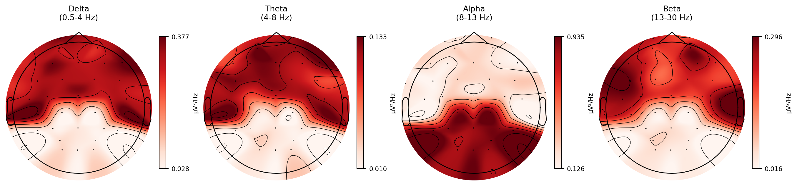

Plotting scalp topographies in MNE-Python: band-power maps, single-frequency maps, normalisation, interpolation, customisation, and comparing topographies between conditions.
Published
31 March 2026
Modified
31 March 2026
Why this topic matters
EEG data are inherently spatial. You have electrodes spread across the scalp, and the same frequency band can behave very differently at different locations. Alpha power is strongest over occipital regions, beta desynchronisation is most pronounced over motor cortex, and frontal theta increases during working memory tasks. A single-channel plot or a table of numbers cannot convey these spatial patterns at a glance.
Topographic maps solve this problem. They project a summary measure (power at a given frequency, voltage at a given time point, or a statistical value) onto a schematic head viewed from above, with colour indicating the magnitude. One good topographic map can tell you more about the spatial distribution of an effect than a dozen line plots.
These maps appear in nearly every EEG publication. If you can create and interpret them, you have one of the most useful tools in the EEG analysis toolkit.
How MNE draws topographies
MNE’s topographic maps follow a standard procedure:
Start with electrode positions. Each electrode has a known (x, y, z) location on the scalp. These come from the montage (e.g., the standard 10-20 system). MNE projects the 3D coordinates onto a 2D plane viewed from above (azimuthal equidistant projection).
Assign a value to each electrode. This could be power in a frequency band, voltage at a time point, or any scalar quantity. You end up with a sparse set of data points scattered across the 2D head.
Interpolate between electrodes. MNE uses spherical spline interpolation by default to fill in the gaps and create a smooth surface. The algorithm fits a spline across the scalp surface, estimating values at locations where no electrode exists.
Draw the head outline. A circle represents the head, with a small triangle at the top for the nose and two arcs on the sides for the ears. The interpolated surface is clipped to this circle.
Apply a colour map. The interpolated values are mapped to colours. Sequential colour maps (like viridis or RdBu_r) show the range from low to high values.
The result is a filled contour plot on a schematic head. Electrode positions are often overlaid as small dots so you can see where the actual measurements come from and where the map is interpolated.
Band-power topographies with spectrum.plot_topomap()
The most common use of topographic maps in spectral analysis is to show how power in a frequency band is distributed across the scalp. MNE’s Spectrum object (returned by raw.compute_psd() or epochs.compute_psd()) has a built-in plot_topomap() method.
import mneimport numpy as np# Assume `raw` is your preprocessed Raw object with a montage setpsd = raw.compute_psd(method="welch", fmin=1, fmax=45, n_fft=512)# Plot topographies for standard EEG bandspsd.plot_topomap( bands={"Delta": (0.5, 4), "Theta": (4, 8),"Alpha": (8, 13), "Beta": (13, 30)}, normalize=True)
The bands parameter tells MNE which frequency ranges to average over. For each band, MNE averages the PSD values within that range for each channel, then plots the result on the head. Setting normalize=True divides each channel’s band power by that channel’s total power (the sum across all frequency bins). This gives you relative power rather than absolute power, which is usually what you want when comparing across participants or conditions.
ERP topographies with evoked.plot_topomap()
Topographic maps are not limited to spectral data. You can also plot scalp distributions of voltage at specific time points using Evoked objects:
# Assume `evoked` is an Evoked object (average of epochs)evoked.plot_topomap(times=[0.1, 0.2, 0.3, 0.4], average=0.05)
The times parameter specifies the time points (in seconds) to plot. The average parameter controls how wide a time window to average around each point. This is useful for ERP analysis: you can see how the scalp distribution of the N1, P2, or P3 component evolves over time.
Why normalisation matters
When you compare topographies between participants or between conditions, raw power values can be misleading. Two participants might have identical spatial patterns (both show posterior alpha dominance), but one has twice the overall signal amplitude because of differences in skull thickness, electrode impedance, or scalp conductivity. Without normalisation, the colour scales will look completely different, and direct comparison becomes difficult.
The standard solution is to express each channel’s band power as a proportion of total power:
\[\text{Relative power}_i = \frac{\text{Power in band for channel } i}{\text{Total power for channel } i}\]
This removes the global amplitude factor and isolates the spatial pattern. MNE’s normalize=True in plot_topomap() does exactly this.
An alternative is to compute the z-score across channels for each participant: subtract the mean and divide by the standard deviation. This is useful when you want to highlight which channels are above or below average for a given person.
Choosing colour maps
The choice of colour map affects how readers interpret your figure. There are two main categories:
Sequential colour maps (e.g., viridis, inferno, plasma) go from dark to light (or vice versa) and are appropriate for quantities that have a natural zero-to-maximum range, such as absolute or relative power.
Diverging colour maps (e.g., RdBu_r, coolwarm, bwr) have a neutral colour in the middle and two contrasting colours at the extremes. They are appropriate when the data have a meaningful centre point, such as:
Difference maps (condition A minus condition B), where zero means no difference.
Z-scored maps, where zero means average.
ERSP maps, where zero means no change from baseline.
When using diverging maps, always set vlim (or vmin/vmax) symmetrically around zero. Otherwise, the neutral colour will not correspond to zero, and the map will be visually misleading.
# Diverging map with symmetric limitsdifference_evoked.plot_topomap( times=[0.3], cmap="RdBu_r", vlim=(-3, 3))
A practical tip: avoid the jet colour map. It has perceptual non-uniformities that create false boundaries in the data. viridis and RdBu_r are better defaults.
Common pitfalls
Edge effects from interpolation
Interpolation estimates values between electrodes, but it can produce misleading patterns at the edges of the head where electrode coverage is sparse. If you have no electrodes below the ears, the interpolated values in those regions are unreliable. MNE clips the map to the head circle by default, which helps, but be cautious about interpreting colours near the boundary.
Missing or bad channels
If you have dropped bad channels during preprocessing, those channels will be absent from the topographic map. The interpolation will fill in the gap, but the result depends on the surrounding electrodes. If several neighbouring channels are missing, the interpolated values in that region are unreliable. Always report which channels were excluded.
Wrong montage
If you forget to set the montage (or set the wrong one), the electrode positions will be incorrect, and the topographic map will be meaningless. Always check that your montage matches your actual electrode layout. You can verify by calling raw.plot_sensors() to see the electrode positions on a 2D head plot.
# Check your electrode positions before plottingraw.plot_sensors(show_names=True)
Inconsistent colour scales across subplots
When plotting multiple topographies side by side (e.g., one per condition), make sure they share the same colour scale. Otherwise, a region that looks “hot” in one plot and “cold” in another might actually have similar values. Use the vlim parameter to set the same range for all subplots.
Working example: posterior alpha topography
The code below simulates a 32-channel EEG recording where alpha power (8-13 Hz) is concentrated over posterior electrodes. It then computes the PSD and plots band topographies.
import numpy as npimport matplotlib.pyplot as pltimport mne# Create a 32-channel montagemontage = mne.channels.make_standard_montage("standard_1020")# Pick 32 channels from the standard 10-20 systemch_names_32 = ["Fp1", "Fp2", "F7", "F3", "Fz", "F4", "F8","T7", "C3", "Cz", "C4", "T8","P7", "P3", "Pz", "P4", "P8","O1", "Oz", "O2","FC1", "FC2", "FC5", "FC6","CP1", "CP2", "CP5", "CP6","AF3", "AF4", "PO3", "PO4"]n_channels =len(ch_names_32)# Simulation parametersrng = np.random.default_rng(42)sfreq =256duration =60n_samples = sfreq * durationtimes = np.arange(n_samples) / sfreq# Define which channels get strong alphaposterior_channels = ["P3", "Pz", "P4", "P7", "P8", "O1", "Oz", "O2","PO3", "PO4", "CP1", "CP2"]# Generate data for each channeldata = np.zeros((n_channels, n_samples))for i, ch inenumerate(ch_names_32):# Pink noise background for all channels white = rng.standard_normal(n_samples) freqs_fft = np.fft.rfftfreq(n_samples, d=1.0/ sfreq) freqs_fft[0] =1.0 pink_filter =1.0/ np.sqrt(freqs_fft) pink = np.fft.irfft(np.fft.rfft(white) * pink_filter, n=n_samples) pink = pink / pink.std() data[i] = pink# Add alpha (10 Hz) to posterior channels with larger amplitudeif ch in posterior_channels: alpha_amp = rng.uniform(2.0, 3.5)else: alpha_amp = rng.uniform(0.2, 0.5) data[i] += alpha_amp * np.sin(2* np.pi *10* times + rng.uniform(0, 2* np.pi))# Add a small amount of beta everywhere data[i] += rng.uniform(0.1, 0.4) * np.sin(2* np.pi *22* times + rng.uniform(0, 2* np.pi) )# Scale to microvoltsdata *=1e-6# Create MNE Info and RawArrayinfo = mne.create_info(ch_names=ch_names_32, sfreq=sfreq, ch_types="eeg")raw = mne.io.RawArray(data, info, verbose=False)raw.set_montage(montage, verbose=False)# Compute PSDpsd = raw.compute_psd(method="welch", fmin=1, fmax=45, n_fft=512, verbose=False)# Plot band topographiesfig = psd.plot_topomap( bands={"Delta\n(0.5-4 Hz)": (0.5, 4),"Theta\n(4-8 Hz)": (4, 8),"Alpha\n(8-13 Hz)": (8, 13),"Beta\n(13-30 Hz)": (13, 30)}, normalize=True, show=False)fig.set_size_inches(14, 4)plt.show()

Band-power topographies from simulated 32-channel EEG. Alpha power (8-13 Hz) is concentrated over posterior electrodes, as expected.
The alpha topography should show a clear posterior concentration. The other bands should be more evenly distributed because we only injected a strong oscillation at 10 Hz in the posterior channels. This matches the typical pattern in resting-state EEG: alpha dominates the posterior scalp, while other bands are more diffusely distributed.
Key takeaways
Topographic maps project a scalar value (power, voltage, statistic) onto a schematic head, giving you an immediate picture of the spatial distribution.
MNE uses spherical spline interpolation to fill in gaps between electrodes.
Always normalise power values (relative power or z-scores) when comparing across participants or conditions.
Use sequential colour maps for non-negative quantities and diverging colour maps for difference or baseline-corrected values. Set symmetric limits for diverging maps.
Check your montage, watch for edge effects from interpolation, and keep colour scales consistent across subplots.
Report which channels were excluded, as missing channels affect the interpolated surface.